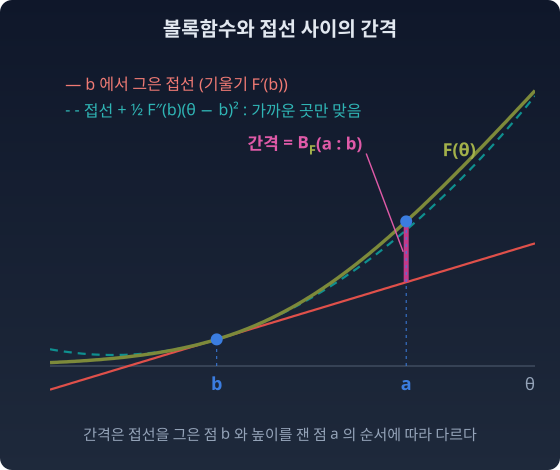

거리의 세 얼굴: KL·브레그만·피셔는 볼록함수 하나에서 나온다
log의 여섯 얼굴이 하나의 성질로 모였다. 분포 사이의 "거리"도 사정이 비슷하다. 모델을 학습시킬 때는 손실 속의 KL로, 볼록함수의 그림을 그릴 때는 브레그만 발산으로, 한 걸음의 길이를 잴 때는 피셔 계량으로, 이 책은 자리마다 다른 자를 꺼내 썼다. 같은 두 분포를 놓고 어느 자를 써야 하는지 매번 고르는 셈이다. 세 이름은 사실 하나의 구조를 가리키고 있지 않을까? 지수족 안에서는 그렇다. 셋은 하나의 볼록함수 F가 보여 주는 세 얼굴이다.
세 얼굴
KL 발산부터 다시 적자. “현실 p로 살면서 지도 q를 믿을 때 치르는 추가 비용.” 두 칸의 순서를 바꾸면 값이 달라지는 비대칭 발산이고, 어떤 두 분포 사이에서도 정의된다.
브레그만 발산은 "볼록함수와 접선 사이의 높이 차이"다. 볼록함수 F의 한 점 b에서 접선을 긋고, 다른 점 a에서 곡선이 접선보다 얼마나 위에 있는지를 잰다. 그 높이를 BF(a : b)로 적는다.

지수족 안에서는 이 높이가 KL과 같았다. 두 칸의 순서를 뒤집어서.
식에서 두 칸의 순서를 눈여겨보자. θ 좌표의 브레그만과 η 좌표의 브레그만은 칸의 순서가 서로 반대다. 지수족을 벗어나면 이 등식은 없다. KL은 여전히 있지만, 그것을 낳는 F가 없다.
피셔 계량(곳마다 작은 걸음의 길이를 재는 규칙)은 "두 점이 가까워지면 비대칭이 사라지며 드러나는 대칭 거리"다.
KL의 발밑에서, 그리고 브레그만의 발밑에서, 같은 행렬이 나타난다. F의 두 번 미분, 그릇의 휘어짐이다. 위 그림의 점선이 그 행렬로 만든 이차식이다. b 가까이에서는 곡선에 붙어 있다가, 멀어지면 떨어진다.
세 갈래로 올라온 길이 한 지점에서 합류한다. KL과 브레그만은 떨어진 두 점 사이의 발산이고, 피셔는 한 점 둘레의 국소적 계량이다. 전역에서 국소로 내려가면, 곧 발밑을 보면 셋이 하나가 된다.
불러오는 중…
수확
“KL은 어디서나, 브레그만은 볼록함수가 있는 곳에서, 피셔는 발밑에서. 지수족 안에서는 셋이 F 하나의 세 얼굴이다. KL과 브레그만이 같다고 말할 때는 언제나 두 칸의 순서를 함께 말한다.”
문제 4. 예상 점수와 실제 점수의 간격
시험 점수를 예상해 놓고 얼마나 빗나갔는지 잴 때 흔히 (실제 − 예상)²을 쓴다. (가) 볼록함수 f(x) = x²로 브레그만 발산 Bf(70 : 65)를 계산하라(실제 70점, 예상 65점). (나) 두 칸을 바꾼 Bf(65 : 70)은? (다) f(x) = eˣ로 Bf(3 : 2)와 Bf(2 : 3)을 계산하고, 왜 (가)(나)와 다른지 말하라.
함께 풀기

(가)는 f(70) − f(65) − f′(65) × (70 − 65) = 4900 − 4225 − 130 × 5 = 25. 오차 제곱이랑 똑같아요.

(나)는 순서를 바꿨으니 달라져야 하는데… 4225 − 4900 − 140 × (−5) = 25. 같아요. 브레그만은 비대칭이라고 들었는데요.

(다)를 먼저 해 보고 견줘 봐요.

Bf(3 : 2) = e³ − e² − e² × (3 − 2) = 5.307, Bf(2 : 3) = e² − e³ − e³ × (2 − 3) = e² = 7.389. 이번엔 달라.
접선과 곡선 사이의 높이는 곡선이 얼마나 휘었느냐로 정해지죠. x²와 eˣ는 어디서 얼마나 휘어 있어요?

x²는 두 번 미분하면 어디서나 2예요. 어느 점에서 접선을 그어도 곡선이 똑같은 모양으로 벌어지니까 순서를 바꿔도 같아요. eˣ는 두 번 미분해도 eˣ라 오른쪽으로 갈수록 더 휘어요. 그래서 접선을 어디에 긋느냐에 따라 높이가 달라져요.
오차 제곱은 어느 점수대에서나 같은 기준으로 깎는 조교고, eˣ는 점수대마다 깎는 기준이 다른 조교네요. KL을 낳는 로그정규화자 F는 어느 쪽인지 다음 문제에서 보면 되겠어요.
문제 5. 브레그만과 KL, 순서까지
베르누이 분포는 t(x) = x, F(θ) = log(1 + eθ), η = F′(θ) = 성공 확률인 지수족이다. 성공 확률 0.2인 분포 p₁과 0.6인 분포 p₂에 대해 (가) KL(p₁‖p₂)를 정의대로 계산하라. (나) BF(θ₂ : θ₁)와 BF(θ₁ : θ₂)를 계산해 (가)와 비교하라. (다) F*(η) = η log η + (1 − η) log(1 − η)로 BF*(η₁ : η₂)를 계산하라. (위 위젯의 「문제 5 불러오기」로 두 분포를 불러와 자기 계산과 견줄 수 있다.)
함께 풀기
(가)는 0.2 log(0.2/0.6) + 0.8 log(0.8/0.4) = 0.3348이요.
(나)는 θ₁ = log(0.2/0.8) = −1.386, θ₂ = log(0.6/0.4) = 0.405로 바꿔서, 브레그만을 BF(θ₁ : θ₂)로 짰어요. KL의 앞 칸이 p₁이니까 θ₁이 먼저요. 0.3819가 나와요.

0.3348이랑 안 맞아요. 앞에서 KL이 브레그만이라고 한 거, 틀린 거 아니에요?
0.3819라는 숫자, 이 문제 어딘가에서 본 적 없어요?
KL(p₂‖p₁)을 계산해 보면… 0.3819요. 제가 계산한 게 반대 방향 KL이네요.
브레그만 BF(a : b)에서 접선은 어느 점에 그어요?

뒤의 b요. KL(p₁‖p₂)는 p₁의 눈으로 평균을 내니까, 접선을 θ₁에 긋고 θ₂에서 높이를 재야 해요. 그러니 BF(θ₂ : θ₁) = 0.3348. 맞아요.
(다)는 제가 했어요. F*에 θ₁ = −1.386을 넣었더니 log(−1.386)이 나와서 nan이에요.
F*는 무슨 좌표의 함수예요?
η요. F는 θ의 함수고 F*는 η의 함수예요. 둘 다 "F"라서 같은 자리에 같은 걸 넣으면 되는 줄 알았어요. η₁ = 0.2, η₂ = 0.6을 넣으면 0.3348이고, 이번엔 순서가 KL과 같아요.
θ 쪽에서는 순서가 뒤집히고 η 쪽에서는 그대로네요. 선형대수에서 쌍대공간의 벡터를 원래 공간의 벡터 자리에 넣으면 안 되는 거랑 같아요. 넣을 수는 있어도 뜻이 없어요.
보고서 표의 열 이름만 보고 단위를 확인 안 한 거랑 비슷하네요. 같은 "F"여도 들어가는 게 달라요.
문제 6. 교사 모델의 로짓, 학생 모델의 로짓
분류기의 로짓(소프트맥스에 넣기 전의 점수)은 결과가 셋인 범주분포의 자연모수 θ다. 이때 로그정규화자는 F(θ) = log(eθ₁ + eθ₂ + eθ₃)이고, 기대모수 η = ∇F(θ)는 소프트맥스 확률이다. 큰 교사 모델의 로짓이 θT = (2, 1, 0), 작은 학생 모델의 로짓이 θS = (0, 1, 1)이다. 학생이 교사를 흉내 내도록 KL(pT‖pS)를 줄이며 학습한다(증류). (가) KL(pT‖pS)를 정의대로, 그리고 브레그만 발산으로 계산하라. (나) 이 KL을 학생 로짓 θS로 미분한 기울기를 구하라. (다) 학생 로짓 셋에 모두 5를 더하면 KL과 기울기는 어떻게 되는가?
함께 풀기
소프트맥스를 돌리면 pT = (0.665, 0.245, 0.090), pS = (0.155, 0.422, 0.422)예요. 정의대로 하면 0.6948. 브레그만은 KL의 앞 칸 pT 쪽에 접선을 그어야 하니까 BF(θS : θT)이고, 이것도 0.6948이에요.
(나)는 학생이 KL의 뒤 칸이니까 브레그만에서도 뒤 칸이라고 보고, 뒤 칸으로 미분하는 공식 −∇²F(b)(a − b)에 넣었어요. (−0.328, −0.047, 0.375)요.
학생 로짓을 하나씩 아주 조금 움직여서 KL이 얼마나 변하는지 직접 재 봤어요?

유한차분으로 하면… (−0.510, 0.178, 0.332)예요. 안 맞아요. 아, 학생은 KL에서는 뒤 칸인데 BF(θS : θT)에서는 앞 칸이에요. 순서가 뒤집힌다는 걸 계산할 때는 써 놓고 미분할 때는 잊었어요.
앞 칸으로 미분하면 접선 쪽 θT는 고정이니까 ∇F(θS) − ∇F(θT) = ηS − ηT = pS − pT. (−0.510, 0.178, 0.332), 유한차분이랑 같아요.
(다)는 로짓에 같은 수를 더해도 소프트맥스가 그대로니까 KL도 0.6948 그대로일 거야. 그런데 브레그만 식으로 보면 F(θS)가 5만큼 커지는데, 그건 어디로 가지?
식의 셋째 항 ηT · (θS − θT)는 그때 얼마나 바뀌어요?

ηT의 성분을 다 더하면 1이니까 정확히 5 늘어나서, 빼면 상쇄돼요. 기울기 pS − pT도 그대로고, 성분을 다 더하면 1 − 1 = 0이에요. 로짓을 다 같이 올리는 방향으로는 기울기가 없는 거예요.
정답이 원-핫인 보통 학습에서 교차엔트로피의 기울기가 「예측 확률 − 정답」인 것도 이거였네요. PyTorch 과제에서 softmax − onehot을 외우기만 했는데, 브레그만의 앞 칸으로 미분한 거였어요.